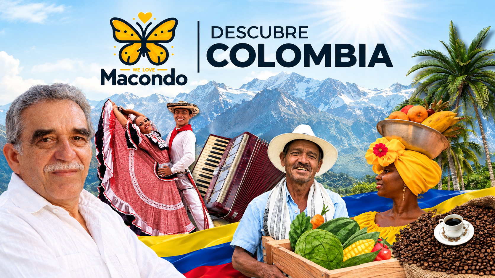

Nuestro producto RUTA MACONDO del Centro Histórico y Cultural de Cartagena es un circuito con anécdotas e historias poco conocidas y sitios donde trabajó, vivió y se inspiró para muchas de sus obras el Nobel de Literatura colombiano Gabriel García Márquez en su estadía e íntima relación con esta ciudad que alberga también su morada final.
Sobre el Recorrido
Recorremos las callecitas y plazas de la bella Cartagena en aproximadamente 2 horas y 50 minutos, haciendo 10 estaciones importantes donde se encuentran alrededor de 26 lugares icónicos que inspiraron el realismo mágico de las obras del autor de "Cien Años de Soledad", "El Amor en los Tiempos del Cólera", "Relatos de un Náufrago" y "Del Amor y otros Demonios".
El orden del recorrido dependerá del punto de inicio acordado para tu grupo.

Detalles y Características de la Ruta Macondo
| Duración | Aproximadamente 2 horas y 50 minutos |
|---|---|
| Horarios Disponibles | Mañana: 9:00 a.m. a 12:00 p.m. Tarde: 3:00 p.m. a 6:00 p.m. |
| Recorrido | 10 estaciones importantes con alrededor de 26 lugares icónicos (el recorrido dependerá del punto de inicio) |
| Precio | El precio depende del tamaño del grupo |
| Reservas | Exclusivamente vía Correo Electrónico o WhatsApp |
Lugares y Estaciones de la Ruta Macondo
A lo largo del circuito por el Centro Histórico y Cultural de Cartagena conoceremos los siguientes puntos emblemáticos (el orden del recorrido dependerá del punto de inicio):
1. Hotel Santa Teresa
2. Baluarte de San Francisco Javier
3. Sede del Festival Internacional de Cine de Cartagena
4. Museo Naval
5. Calle San Juan de Dios – Diario El Universal
6. Fundación Gabriel García Márquez para el Nuevo Periodismo Iberoamericano
7. Plaza San Pedro – Iglesia San Pedro Claver
8. Museo de Arte Moderno de Cartagena “MAMC”
9. Plaza de los Coches
10. Puerta o Torre del Reloj
11. Calle del Arzobispado
12. Heladería Americana
13. Hotel Monserrate
Reserva tu Ruta Macondo
El precio depende del tamaño del grupo. Contáctanos directamente por correo electrónico o WhatsApp para cotizar y reservar tu recorrido en el horario de 9:00 a.m. a 12:00 p.m. o de 3:00 p.m. a 6:00 p.m.